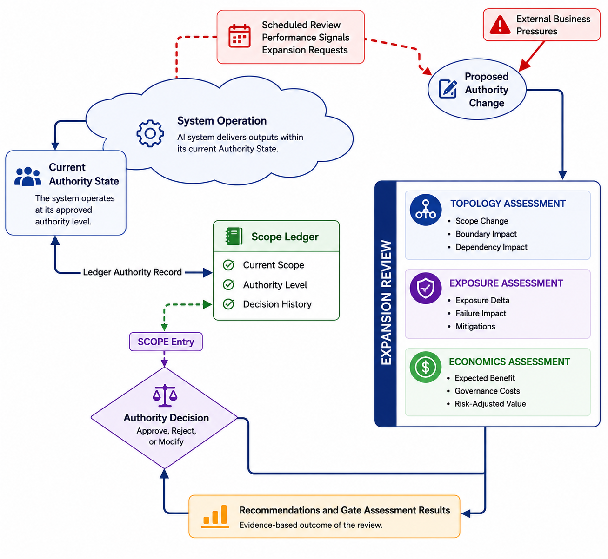

8. THE SCOPE GOVERNANCE CYCLE
Each section of this paper has looked at a different aspect of authority governance. Together, they create a continuous lifecycle, which is an ongoing process of proposing, reviewing, deciding, recording, and monitoring changes in authority as systems evolve within organisations. This lifecycle is not about governing AI deployment; it is about governing the evolution of authority.
The SCOPE Governance Cycle begins with a proposed change in authority.
Operational monitoring can spot opportunities for expansion. For instance, a system may work well at its current authority level, and evidence might suggest it could function at a higher authority with proper oversight. On the other hand, monitoring might highlight the need for contraction, such as performance issues, unexpected failures, or behavioral shifts that indicate the current authority level is no longer justified.
Business goals can drive the need for broader capabilities. Competitive pressures may lead to decisions on whether to align with competitor functions. Changes in regulations, technological progress, or shifts in organisational priorities may lead to proposals for expanding or redefining authority.
Formally, monitoring provides feedback that can prompt a new authority review if certain threshold events happen. These may include significant changes in system performance, material changes in the organisational context, explicit requests from the business to change the scope, or regular review cycles that are scheduled.
Regardless of how they arise, every proposal goes through the same governance process. The proposal undergoes an Expansion Review—not as a mere formality, but as the key mechanism within the framework.
The SCOPE Governance Cycle, shown in Figure 8, moves from proposal through assessment, decision, recording, and monitoring. The process is complete when evidence prompts the next review.

Figure 8: The SCOPE Governance CycleFigure 8 shows that systems function within their current authority state until monitoring, performance signals, or business needs lead to a proposed authority change. That proposal enters the Expansion Review, where three assessment disciplines evaluate topology implications, exposure consequences, and economic justification. The Authority Decision weighs evidence against gate criteria, and the outcome—approval, rejection, or modification—is recorded in the Scope Ledger, setting the new operational authority state.
The Expansion Review
The Expansion Review does not make decisions alone. It gathers evidence from various assessment disciplines, each providing different insights into the key question: Is this proposed authority change justified?
The Expansion Review checks the proposal against the gate criteria outlined in the governance framework. These criteria—Performance, Reliability, Trust Signals, and Compliance—are not abstract; they are concrete measures of whether the system has earned the proposed authority.
To address these criteria, three assessment disciplines conduct parallel analyses.
Topology Assessment looks at how the proposed change affects authority structure. It analyses which boundaries would shift, what dependencies the new authority would create, and how the system's place in organisational workflows would change. This assessment asks: What would authority at this new level really mean in practice?
Exposure Assessment examines the potential consequences of the proposed change. It assesses how organisational exposure would change, the potential impact of failure at the new authority level, and what measures might be needed to manage the increased exposure. This assessment asks: What risks would the organisation face if this expansion happened?
Economic Assessment determines whether the change is justified. It evaluates the expected benefits for the organisation, the governance and operational costs of operating the system at the new authority level, and the risk-adjusted value of the expansion—or, in the case of contraction, the efficiency gains from functioning at a lower authority level. This assessment asks: Would the created value justify the assumed exposure and the governance burden?
Together, these three assessments provide the evidence needed to evaluate whether a proposed authority change is justified. That evidence informs the authority decision.
Authority Decisions
The Authority Decision compares evidence from all three assessment disciplines against the applicable gate criteria. A proposal gets approved only when all criteria are fully met. This is a non-negotiable standard—partially met criteria do not equal approval. The requirement for complete satisfaction of all criteria turns gate reviews into true governance mechanisms instead of mere advisory checkpoints.
The Authority Decision is made by the Ledger Owner, the individual responsible for the business outcomes related to the system. They consult with the governance roles outlined in the Scope Ledger governance policy: the Technical Reviewer, who certifies technical feasibility, the Risk and Compliance Reviewer, who evaluates organisational risk appetite and regulatory compliance, and independent auditors who verify governance integrity.
This separation of roles ensures that authority decisions are genuinely independent. No single stakeholder controls both the request for authority and the approval process.
The decision can lead to approval, rejection, deferral for more evidence, or approval with modifications. Importantly, this distinction matters: the decision concerns authority, not capability. A system may technically be able to function at a higher authority level without being authorized for it. SCOPE deliberately separates these two aspects to make sure that governance decisions are clear and intentional, not just implicit in engineering choices.
Once a decision is made, it is recorded in the Scope Ledger. This record includes not only the decision itself but also the evidence supporting it and the gate criteria that were met. The record is unchangeable; future decisions do not erase this history but build on it.
The Scope Ledger as Institutional Memory
The Scope Ledger acts as the organisation's official record for authority governance.
It documents the current scope, authority level, and decision history that led to the present state. Without this memory, organisations risk facing a structural issue: they keep revisiting the same authority questions without understanding how the current state developed. Old assumptions become hidden, risk acceptances are forgotten, and boundary decisions lose their rationale.
The Ledger changes governance from a series of isolated decisions into a cumulative process. It ensures that future reviews start with understanding instead of assuming. When a new reviewer takes over governance of a system, they inherit not just the current authority but also the reasoning that led to it. This context helps them assess future proposals appropriately.
Operational State and Feedback
Once recorded in the Ledger, the approved authority state becomes the system's current operational state. The system functions within its approved scope and authority limits.
During operation, monitoring mechanisms gather information about system behavior, reliability, performance, incidents, overrides, and other operational signals. This evidence does not instantly change authority. Instead, it generates information that may lead to future authority reviews, closing the feedback loop that connects governance to operational reality.
In this way, monitoring works as feedback rather than governance. Its goal is not to make real-time authority decisions but to provide information that might lead to revisiting authority decisions and to start the review process when the evidence is significant.
Governing Authority Evolution
The lifecycle continues indefinitely. New information leads to new proposals. New proposals result in new reviews. New reviews bring about new decisions. New decisions update the Scope Ledger and set a revised authority state. Over time, authority evolves through a series of intentional, visible, and reviewable changes.
This is the central objective of SCOPE.
The framework does not seek to prevent authority expansion. Nor does it assume authority should stay fixed. organisations must be able to increase authority when justified and decrease authority when necessary. The important factor is that these changes happen through governance rather than by default.
The SCOPE Governance Cycle provides the method for this governance. It ensures that every authority change is proposed, reviewed against clear criteria, decided through independent assessment, recorded in a lasting record system, and monitored for evidence that might justify future reviews. Every expansion includes set review and reversal mechanisms. These are invoked as routine elements of ongoing governance, not as exception cases.
The result is a system where authority remains clear, reviewable, and contingent during its evolution.
Traditional governance assumes that authority is assigned once and then controlled by policy. Agentic systems challenge this view. Their authority changes constantly due to integration, operational success, and the build-up of organisational dependency. Governing that evolution needs more than just rules about what systems can do. It necessitates a disciplined approach to determine how much authority systems should have and under what conditions over time.
The central question of AI governance is therefore not: "Is this system safe?" but rather "How much authority should this system have, and how will we govern its evolution from here?"
SCOPE exists to answer that question.